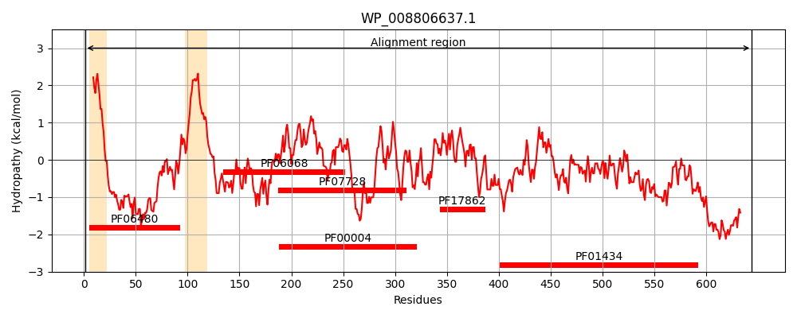
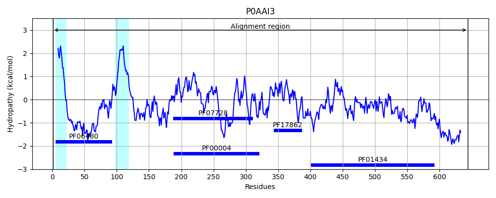
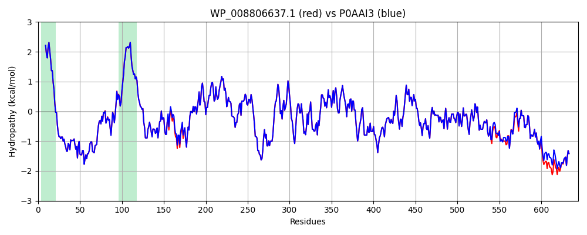

Hit Accession: P0AAI3
Hit TCID: 3.A.29.1.5
Hit Description: gnl|BL_ORD_ID|8671 gnl|TC-DB|P0AAI3|3.A.29.1.5 ATP-dependent zinc metalloprotease FtsH OS=Escherichia coli (strain K12) OX=83333 GN=ftsH PE=1 SV=1
Mach Len: 644
e:0.000000
Query TMS Count : 2
Hit TMS Count: 2
TMS-Overlap Score: 2.050000
Predicted Substrates:None
BLAST Alignment:
Score: 3237 , Bit scores: 1251 bits, E-value: 0.0e+00, Alignment length: 644, Percentage identity: 98
Query: 1 MAKNLILWLVIAVVLMSVFQSFGPSESNGRKVDYSTFLQEVNQDQVREARINGREINVTKKDSNRYTTYIPVNDPKLLDNLLTKNVKVIGEPPEEPSLLASIFISWFPMLLLIGVWIFFMRQMQGGGGKGAMSFGKSKARMLTEDQIKTTFADVAGCDEAKEEVGELVEYLREPSRFQKLGGKIPKGVLMVGPPGTGKTLLAKAIAGEAKVPFFTISGSDFVEMFVGVGASRVRDMFEQAKKAAPCIIFIDEIDAVGRQRGAGLGGGHDEREQTLNQMLVEMDGFEGNEGIIVIAATNRPDVLDPALLRPGRFDRQVVVGLPDVRGREQILKVHMRRVPLAPDIDAAIIARGTPGFSGADLANLVNEAALFAARGNKRVVSMVEFEKAKDKIMMGAERRSMVMTEAQKESTAYHEAGHAIIGRLVPEHDPVHKVTIIPRGRALGVTFFLPEGDAISASRQKLESQISTLYGGRLAEEIIYGPEHVSTGASNDIKVATNLARNMVTQWGFSDKLGPLLYAEEEGEVFLGRSVAKAKHMSDETARIIDQEVKSLIERNYGRARQLLNDNMDILHAMKDALMKYETIDAPQIDDLMARRDVRPPAGWEEPGSSNNSDNNGTPRAPRPVDEPRTPNPGNTMSEQLGDK 644
MAKNLILWLVIAVVLMSVFQSFGPSESNGRKVDYSTFLQEVN DQVREARINGREINVTKKDSNRYTTYIPV DPKLLDNLLTKNVKV+GEPPEEPSLLASIFISWFPMLLLIGVWIFFMRQMQGGGGKGAMSFGKSKARMLTEDQIKTTFADVAGCDEAKEEV ELVEYLREPSRFQKLGGKIPKGVLMVGPPGTGKTLLAKAIAGEAKVPFFTISGSDFVEMFVGVGASRVRDMFEQAKKAAPCIIFIDEIDAVGRQRGAGLGGGHDEREQTLNQMLVEMDGFEGNEGIIVIAATNRPDVLDPALLRPGRFDRQVVVGLPDVRGREQILKVHMRRVPLAPDIDAAIIARGTPGFSGADLANLVNEAALFAARGNKRVVSMVEFEKAKDKIMMGAERRSMVMTEAQKESTAYHEAGHAIIGRLVPEHDPVHKVTIIPRGRALGVTFFLPEGDAISASRQKLESQISTLYGGRLAEEIIYGPEHVSTGASNDIKVATNLARNMVTQWGFS+KLGPLLYAEEEGEVFLGRSVAKAKHMSDETARIIDQEVK+LIERNY RARQLL DNMDILHAMKDALMKYETIDAPQIDDLMARRDVRPPAGWEEPG+SNNS +NG+P+APRPVDEPRTPNPGNTMSEQLGDK
Sbjct: 1 MAKNLILWLVIAVVLMSVFQSFGPSESNGRKVDYSTFLQEVNNDQVREARINGREINVTKKDSNRYTTYIPVQDPKLLDNLLTKNVKVVGEPPEEPSLLASIFISWFPMLLLIGVWIFFMRQMQGGGGKGAMSFGKSKARMLTEDQIKTTFADVAGCDEAKEEVAELVEYLREPSRFQKLGGKIPKGVLMVGPPGTGKTLLAKAIAGEAKVPFFTISGSDFVEMFVGVGASRVRDMFEQAKKAAPCIIFIDEIDAVGRQRGAGLGGGHDEREQTLNQMLVEMDGFEGNEGIIVIAATNRPDVLDPALLRPGRFDRQVVVGLPDVRGREQILKVHMRRVPLAPDIDAAIIARGTPGFSGADLANLVNEAALFAARGNKRVVSMVEFEKAKDKIMMGAERRSMVMTEAQKESTAYHEAGHAIIGRLVPEHDPVHKVTIIPRGRALGVTFFLPEGDAISASRQKLESQISTLYGGRLAEEIIYGPEHVSTGASNDIKVATNLARNMVTQWGFSEKLGPLLYAEEEGEVFLGRSVAKAKHMSDETARIIDQEVKALIERNYNRARQLLTDNMDILHAMKDALMKYETIDAPQIDDLMARRDVRPPAGWEEPGASNNSGDNGSPKAPRPVDEPRTPNPGNTMSEQLGDK 644 | Protein Hydropathy Plots: |
|---|
|  |  |
Pairwise Alignment-Hydropathy Plot:
|
|---|
|  |